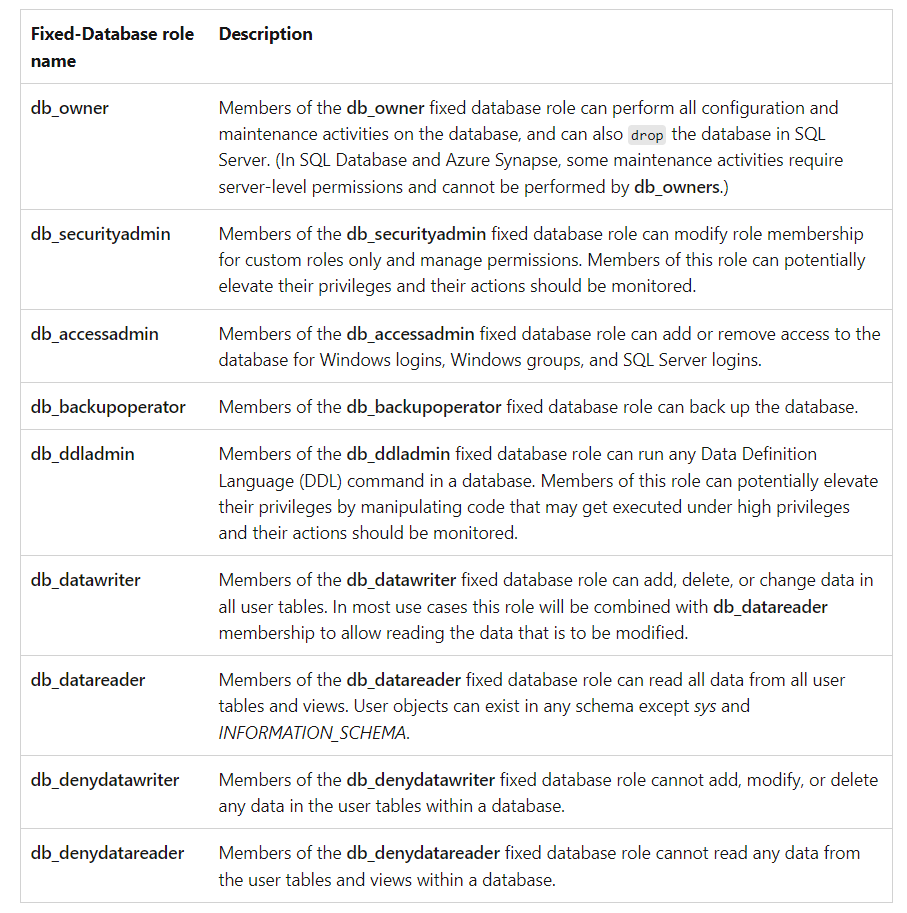

Aanmaken SQL Database
Handleiding
Zie voor de authenticatie vanuit een applicatie bijlage 1.
Kies vanuit de juiste resourcegroup voor het creëren van Azure SQL.

Kies voor een single database.
Kies de namen volgens Azure resources
ontwerp

Kies bij "Set Azure AD admin" voor een account met Global Admin rechten.

Klik bij "Compute + storage"op "Configure database".

Kies voor DTU Basic, dat is meestal voldoende en veel goedkoper.

Kies "locally redundant backup storage"


Beginnen met "Allow Azure services.."op "No". Als er een VM toegang moet hebben tot de SQL database kan dit achteraf altijd nog ingesteld worden.


Ga naar de nieuwe SQL-server en voeg bij "Security\Networking" de volgende Firewall-rules toe:
Naam IP-nummer
ClientIP-Datacentre-A2B 193.53.249.2
ClientIP-Datacentre-KPN 145.222.229.148
ClientIP-Datacentre-Openfiber 193.56.14.2
ClientIP-Papland-Glas 185.213.105.175
Bij de database onder Settings staan de connection strings.
De database in dit voorbeeld kan via een SQL Manager Studio op
"tcp:srv-sql-weu-001.database.windows.net,1433" geconnect worden.
Bij het aanmaken stel je een wachtwoord in voor de Server admin login
(in dit geval sqlserveradmin).
Dit wachtwoord kan later gewijzigd worden via

Als Azure AD admin is jasper.verhaar@monta.tech ingesteld, dat kan hier veranderd worden :

Rechten toekennen
AD-authenticatie
Maak met SQL Manager Studio op MP-MGMT12 een connectie met "tcp:srv-sql-weu-001.database.windows.net,1433" en zet authentication op "Azure ... with MFA".

In onderstaand voorbeeld krijgt een developer alle rechten op de aangemaakte database "db-voorraad-001" en krijgt een serviceaccount lees en schrijfrechten.
From external user betekent dat Azure gaat kijken in de tenant die hoort bij Azure Active Directory admin (jasper.verhaar@monta.nl).
Zie voor alle rollen Database-Level Roles - SQL Server | Microsoft Learn 
Als een gebruiker in wil kunnen loggen met bijv. de SQL Management studio dat moet de user ook aangemaakt worden op de master-database.
[Developer]
Aanmaak op de gewenste Database
-- add contained Azure AD user (voer dit uit op de gewenste database)
CREATE USER [paul.gerritsen@monta.nl]
FROM EXTERNAL PROVIDER
WITH DEFAULT_SCHEMA = dbo;
-- add user to role(s) in db
ALTER ROLE db_owner ADD MEMBER [paul.gerritsen@monta.nl];
Aanmaak op de master database
CREATE USER [paul.gerritsen@monta.nl] FROM EXTERNAL PROVIDER WITH DEFAULT_SCHEMA=[dbo]
[Serviceaccount]
Aanmaak op de gewenste Database
-- add contained Azure AD user
CREATE USER [rs_proctask01@monta.nl]
FROM EXTERNAL PROVIDER
WITH DEFAULT_SCHEMA = db_datawriter;
-- add user to role(s) in db
ALTER ROLE db_datareader ADD MEMBER [rs_proctask01@monta.nl];
ALTER ROLE db_datawriter ADD MEMBER [rs_proctask01@monta.nl];
Aanmaak op de master database
CREATE USER [rs_proctask01@monta.nl] FROM EXTERNAL PROVIDER WITH DEFAULT_SCHEMA=[db_datawriter] GO
Onder security bij de database zijn de toegevoegde gebruikers te zien :

Met onderstaande query zijn de rollen te zien :
SELECT roles.principal_id AS RolePrincipalID
, roles.name AS RolePrincipalName
, database_role_members.member_principal_id AS MemberPrincipalID
, members.name AS MemberPrincipalName
FROM sys.database_role_members AS database_role_members
JOIN sys.database_principals AS roles
ON database_role_members.role_principal_id = roles.principal_id
JOIN sys.database_principals AS members
ON database_role_members.member_principal_id = members.principal_id;
GO

Authenticatie Username/password
Als AD-authenticatie niet werkt of als er een lokaal account gebruikt gaat worden dient er als volgt een login aangemaakt te worden.
Op master
CREATE LOGIN rs_proctask01_loc
WITH PASSWORD = 'password'
Op Master
CREATE USER [rs_proctask01_loc]
FOR LOGIN [rs_proctask01_loc]
WITH DEFAULT_SCHEMA = dbo;
Op "db-voorraad-001"
CREATE USER [rs_proctask01_loc]
FOR LOGIN [rs_proctask01_loc]
WITH DEFAULT_SCHEMA = dbo;
-- add user to role(s) in db
ALTER ROLE db_datareader ADD MEMBER [rs_proctask01_loc];
ALTER ROLE db_datawriter ADD MEMBER [rs_proctask01_loc];